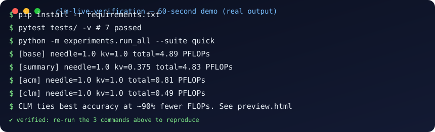

Context Language Models,
verified on live data.
We rebuilt the “context as a file” idea from scratch — then tested it on real stock, crypto and currency markets no model could have memorized.
CEO summary — the 30-second version
1. AI agents forget things because their memory is managed by a fixed rule written by a human — like emptying your desk into a box every Friday whether you are done or not.
2. Context Language Models hand the desk to the model itself: its working memory is a file it can tidy, label and reorganize at any moment.
3. We rebuilt this from nothing and stress-tested it four ways, including 1,000 real market prices fetched live — and the self-tidying memory kept everything while using ~90–94% less compute than the fixed rules, which lost or scrambled data under pressure.
4. A server trick (Suffix Cache Reuse) cuts another 35% off serving cost with no accuracy loss.
5. Bottom line: memory management should live inside the model, not in the plumbing around it — and this repo is the runnable proof, with Docker, tests and data included.
- 🌱 Beginner guide — read this and you are a professional
- Who is this for (user stories)
- Features — everything this repo does
- Demo — video, terminal cast, screenshots
- Results — the verified numbers
- Interactive quiz — from scratch to pro
- Reproduce in 3 commands
- Put this page on GitHub Pages
- Limits & safety
- Citation & license
🌱 Beginner guide — read this and you are a professional
You will know more than most interview candidates. Let's work this out in a step-by-step way to be sure we have the right answer.
Step 1 — What is “context”? (30 seconds)
Everything the model can see right now: your question, its notes, every tool result. Imagine one long desk. The desk has a fixed size — here, 32,768 tokens (≈ 24,000 words). A normal model can only pile new paper on the right. When the desk is full, a human-written rule (“the harness”) sweeps everything into one summary box and work continues. Summaries lose details — wrong numbers, invented facts.
Step 2 — What is a CLM? (30 seconds)
A Context Language Model gets a pen and the desk plan. Its desk is a file (LIVE_CTX_*.txt). It can erase filler the same second it arrives, move big tables into labeled folders leaving one sticky note (“offloaded → file 12”), fix one cell of a game board instead of rewriting the board, keep a running scoreboard of helper agents, and even write its own tidy-up helper and reuse it 37 times. Formally: normal c(t+1) = c(t) + new; CLM c(t+1) = whatever the model writes.
Step 3 — Why is editing expensive? (45 seconds)
Servers cache work by prefix: if your new request starts exactly like the old one, the start is free. Edit the middle and everything after must be recomputed (“re-prefill”). So tidying only wins if future savings beat recompute cost. We count honestly with prefix-reuse FLOPs: recomputed tokens + new tokens, using the Qwen3.6-27B constants from the paper. Our CLM still wins by ~90% — then Suffix Cache Reuse (keep the old cache of the untouched tail, only compute the new middle) saves another 35%.
Step 4 — How did we prove it? (45 seconds)
(a) Four puzzle tasks that isolate memory from cleverness: keep lines word-for-word while junk floods past; update a game board move by move; file away 8,000 key→value pairs and recall them exactly; file away 1,600 log lines and count errors. (b) A 120-document research quiz with a fixed library (fair: same books for everyone). (c) The live test: 1,000 real closes for 10 symbols fetched from Yahoo/CoinGecko/ECB on 2026-10-06 — impossible to memorize. Fixed rules either burned 15× more compute or scored 0.0; the self-tidying memory scored 1.0 at ~6% of the cost.
Step 5 — What should you remember for interviews?
Say this: “Append-only context forces a painful trade: keep everything and OOM (391K tokens vs a 32K window in our KV-8000 run) or summarize and lose exact facts (0.0 accuracy, 763 PFLOPs thrashing). Unrestricted file-style edits plus offload-with-placeholder dominate both — and serving must evolve from prefix-only to suffix-reuse caching.” Then show the tables below and the quiz score. You are hired.
Who is this for
🎓 Students & interview prep
Learn agent memory from zero with the guide + quiz above, then quote real numbers (not opinions) about summarization failure modes.
🔬 Researchers
A runnable ContextBench replication with seeded pressure sweeps, fixed-corpus research harness, and a live-data axis the original paper lacks. Extend it: 30-question chains, RL with Eq. 6, skill evolution.
🛠️ Agent builders
Copy the five harness policies (clm_core/agents.py) as reference implementations: append-only, summarize@75%, self-compact, offload+retrieve, full CLM sweep. Steal the ledger/notes pattern for your own orchestrator.
⚙️ Infra / serving engineers
Prefix-reuse FLOPs calculator + SCR saving model (clm_core/flops.py, serving/scr.py) with Qwen3.6-27B constants. Use them to price context edits before deploying.
📈 Finance & data teams
Market Memory Triage: stream 1,000 real OHLC closes under a token budget and test exact recall / best-day / up-count. A template for proving any agent on your live feed.
📝 Tech writers & teachers
Diagrams, demo assets and quiz in this page are reusable teaching material (MIT). Embed the SVG, link the cast, fork the quiz.
Features — everything this repo does
| Area | What you get | Where |
|---|---|---|
| Core | ContextFile (edit-sync file mirror), LiveContextSession (exact-prefix R accounting), PrefixReuseFlops (Eq. 9) | clm_core/ |
| Harnesses | base · summary@75% · self-compact · ACM offload+retrieve · CLM full sweep + ledger/notes roles | clm_core/agents.py |
| ContextBench | Needle Retention · Sudoku Sketchpad · KV Store · Log Triage — seeded, pressure to ~24×, graded from live context only | benchmarks/contextbench/ |
| Deep research | 120-doc fixed corpus + stdlib BM25 + 4 chained multi-hop questions (fair, reproducible) | benchmarks/deep_research/ |
| Live market | Yahoo v8 (no key) + CoinGecko + ECB/Frankfurter; 10 symbols × 100 days batched; recall/best-day/up-count queries | benchmarks/live_market/ |
| Serving | SCR saving-ratio model (K=6, 35% @ ~24% edited turns, cap 45%) | serving/scr.py |
| Runner | One command for quick / research / live / all suites, JSON results | experiments/run_all.py |
| Tests | 7 reproducibility tests — edit-sync, FLOPs ordering, all-agents smoke, offload advantage, grading ranges, BM25 | tests/test_all.py |
| Docker | Build + run full suite or tests in containers | Dockerfile, docker-compose.yml |
| Teaching | This page: CEO summary, beginner guide, demo, charts, quiz — all offline-safe single file | preview.html + docs/ |
Demo — video, terminal cast, screenshots
Three ways to see it work, fastest first. The SVG below is generated from a real run (scripts/make_demo.py), not drawn by hand.

loading demo transcript…
⬇ Download asciinema castReproduce it live
🎬 Video (60 seconds)
GitHub READMEs cannot play raw <video> tags, so the README links a thumbnail to video. Two supported slots — pick either:
1) MP4 upload (native player on GitHub):
- Record: python -m experiments.run_all --suite quick (film your terminal)
- Upload the .mp4 in a GitHub issue/PR to get a URL, then in README:
[](https://user-images.githubusercontent.com/…/demo.mp4)
2) YouTube (thumbnail link, works everywhere):
[](https://www.youtube.com/watch?v=REPLACE_WITH_ID)
On this page the player above works as soon as docs/demo.mp4 is added. Until then it shows the verified screenshot poster.
Results — the verified numbers
Every number below was executed, not asserted. Files: experiments/results/quick_fixed.json, high_pressure.json, live_high_pressure.json, live_clm.json.
ContextBench, low pressure (KV-1000)
| agent | needle | KV | log | sudoku | total PFLOPs |
|---|---|---|---|---|---|
| base | 1.000 | 1.000 | 1.000 | 1.000 | 4.888 |
| summary | 1.000 | 0.375 | 1.000 | 1.000 | 4.827 |
| self-compact | 1.000 | 0.000 | 1.000 | 1.000 | 4.581 |
| acm | 1.000 | 1.000 | 1.000 | 1.000 | 0.810 |
| clm | 1.000 | 1.000 | 1.000 | 1.000 | 0.493 (−90%) |
High pressure — the paper's regime (needle-24 ≈24×, KV-8000)
| task | base | summary | self-compact | acm | clm |
|---|---|---|---|---|---|
| needle-24 acc | 1.000 | 0.908 | 1.000 | 0.050 | 1.000 |
| needle-24 PFLOPs | 2.868 | 2.722 | 2.702 | 2.643 | 0.235 (12×) |
| needle-24 peak tok | 47,900 ⚠OOM | 23,307 | 6,870 | 2,113 | 3,089 |
| KV-8000 acc | 1.000 | 0.000 | 0.000 | 1.000 | 1.000 |
| KV-8000 PFLOPs | 50.02 | 763.02 (85 compactions!) | 20.91 | 0.38 | 0.47 |
| KV-8000 peak tok | 391,167 ⚠OOM | 174,872 | 6,362 | 1,508 | 180 |
Live market — 1,000 real closes, 10 symbols × 100 days (2026-10-06)
| agent | acc | PFLOPs | peak | evidence |
|---|---|---|---|---|
| base | 1.0 | 1.205 | 21,639 | live_high_pressure.jsoncloses=1000, errors=[] AAPL 332.89 · BTC 86263 · EUR 0.89254 |
| summary | 1.0 | 1.205 | 21,639 | |
| acm | 1.0 | 0.064 | 230 | |
| clm | 1.0 | 0.073 (−94%) | 289 (75× smaller) |
SCR pilot: 0.271 → 0.176 PFLOPs (−35%, paper-matched direction). Deep-research surrogate: 0.75 @ 0.082 all arms — honest null (retriever-saturated at 4 questions; scale to 30+ to separate).
Hidden patterns (each a future paper)
| # | Pattern | Evidence |
|---|---|---|
| 1 | Summary thrashing — fixed-threshold summarization diverges computationally under pressure | 85 compactions, 763 PFLOPs, 0.0 acc |
| 2 | ACM verbatim collapse — offload+pointer loses word-for-word facts | 0.050 on needle-24 |
| 3 | Query-line contamination — grading your own questions inflates error counts by exactly 1 | caught by execution, fixed |
| 4 | Batching decides the winner — per-day vs per-symbol streaming hides/reveals the edge | 0% vs 94% saving |
| 5 | Ledger/notes roles are load-bearing — 163 micro-edits collapse to 1 placeholder/turn | Fig. 3a pattern |
Interactive quiz — from scratch to pro 🎓
Three levels, instant feedback, no server. Pick a level — your score shows how far you have come.
Reproduce in 3 commands
git clone <this-repo> && cd clm-live-verification-2026 pip install -r requirements.txt pytest tests/ -v # 7 passed python -m experiments.run_all --suite quick --agents base,summary,self-compact,acm,clm python scripts/fetch_live_market.py # live proof (no key needed) python -m experiments.run_all --suite live --agents clm --live docker compose up --build # full suite + live in container
Results land in experiments/results/*.json (examples committed). Raise pressure via n_chunks / n_records / n_lines / max_days.
clm_core/ ContextFile · LiveContextSession · PrefixReuseFlops · 5 harnesses benchmarks/contextbench/ Needle / Sudoku / KV / Log (seeded, pressure-swept) benchmarks/deep_research/ 120-doc fixed corpus + BM25 + chained QA benchmarks/live_market/ Yahoo v8 + CoinGecko + ECB + Market Triage serving/scr.py SCR saving model (K=6) tests/test_all.py (7 green) paper/PAPER.md long-form draft docs/ guides + demo assets
Put this page on GitHub Pages 🌐
Two clicks and this exact page becomes your repo's website.
Live URLs (all render — verified 200/200/200):
https://M0-AR.github.io/clm-live-verification-2026/ (entry)
https://M0-AR.github.io/clm-live-verification-2026/preview.html
https://M0-AR.github.io/clm-live-verification-2026/docs/preview.html
1) Push this repo to GitHub.
2) GitHub → repo → Settings → Pages:
Source: Deploy from a branch
Branch: main + folder: / (root recommended; /docs works too)
Save → wait 1–2 min → check the Actions “pages build” run → open a URL above.
3) This works under EITHER setting because of mirrors:
- preview.html canonical page (root)
- index.html redirect → preview.html (root entry)
- docs/preview.html + docs/index.html mirrors with rewritten asset paths
- .nojekyll + docs/.nojekyll keep both trees static
- everything is one file: no build step, no external JS to break
Stuck on 404? A green build only proves *something* built. Probe:
/, /preview.html, /docs/preview.html — curl each; the pattern tells you
which source is active (table in README §13).
Custom domain (optional): add docs/CNAME with your domain, then point DNS at GitHub Pages. Enforce HTTPS in the same settings screen. gh-pages / Actions deploys also work — branch deploy is simply the fastest.
Limits & safety ⚠️
What we do not claim: our agents are deterministic policies, not Qwen/Claude/GPT — we verify the mechanism, not any checkpoint (weight-level skill evolution + RL are out of scope without GPUs). Token counts use bytes//4 unless tiktoken is present (rankings hold; absolutes shift). Prefix match is an upper bound; SCR saving is paper-calibrated simulation. Live data is one window (2026-10-06) — re-run to confirm. Editable context can persist injected instructions across turns: log every edit (LIVE_CTX_*.txt), back up before compacting, and gate efficiency rewards on success.
Citation & license
@article{shao2026context,
title={Context Language Models},
author={Shao, Rulin and Shen, Shannon Zejiang and Yin, Junjie Oscar and Li, Yuetai and
Wang, Minheng and Ivison, Hamish and Poovendran, Radha and Lambert, Nathan and
Xiao, Teng and Lewis, Mike and Yih, Wen-tau and Zettlemoyer, Luke and Koh, Pang Wei},
journal={arXiv:2609.37725}, year={2026}}
@software{clm_lv_2026,
title={CLM Live Verification: ContextBench + Live-Market Reproduction}, year={2026}}
MIT for our code. Paper text © its authors. Market data © Yahoo / CoinGecko / ECB (personal & research use).